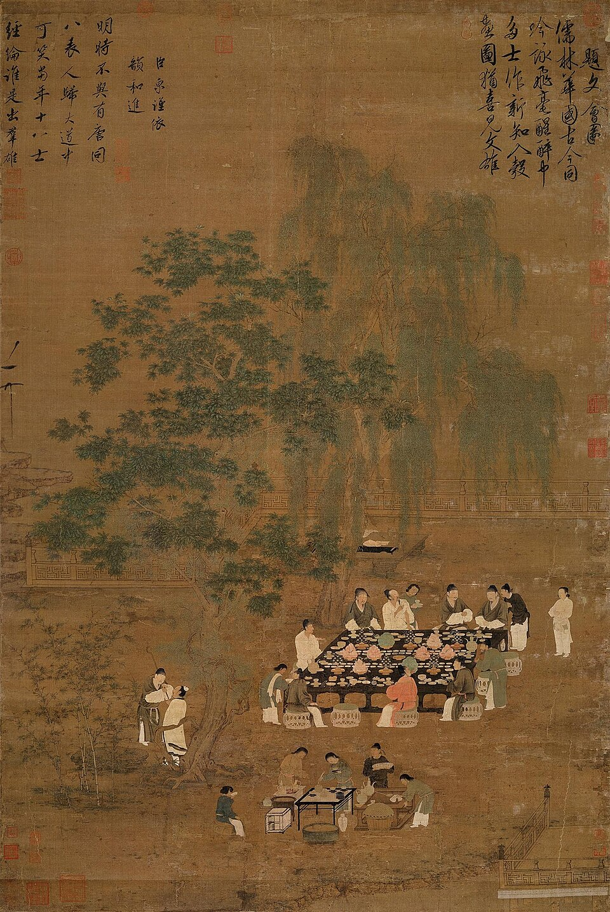
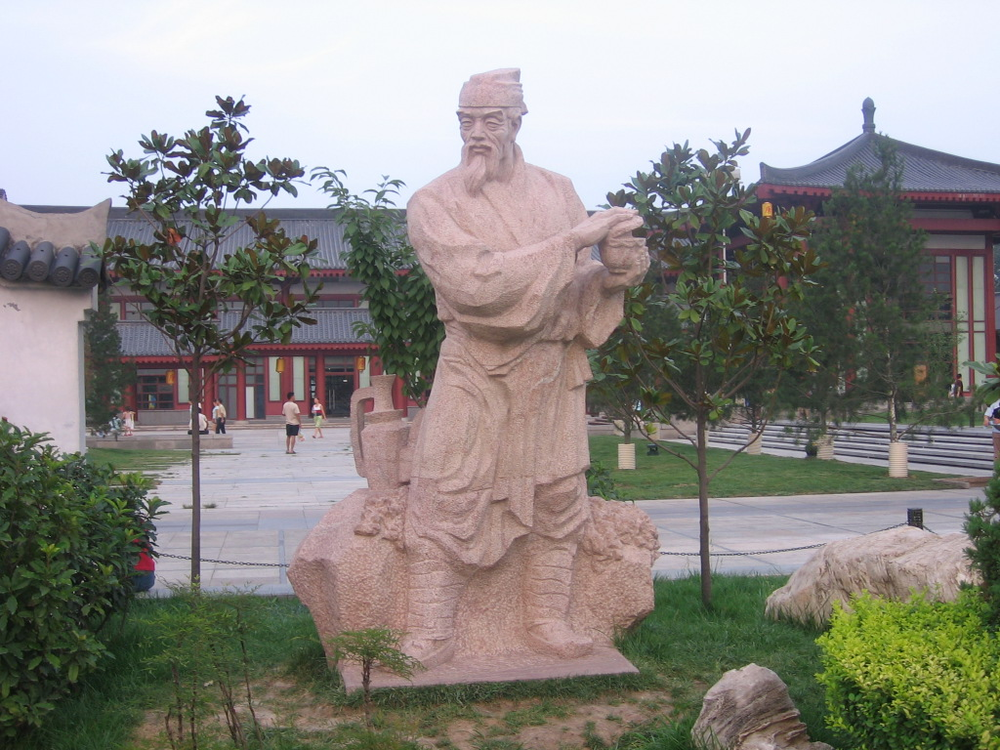
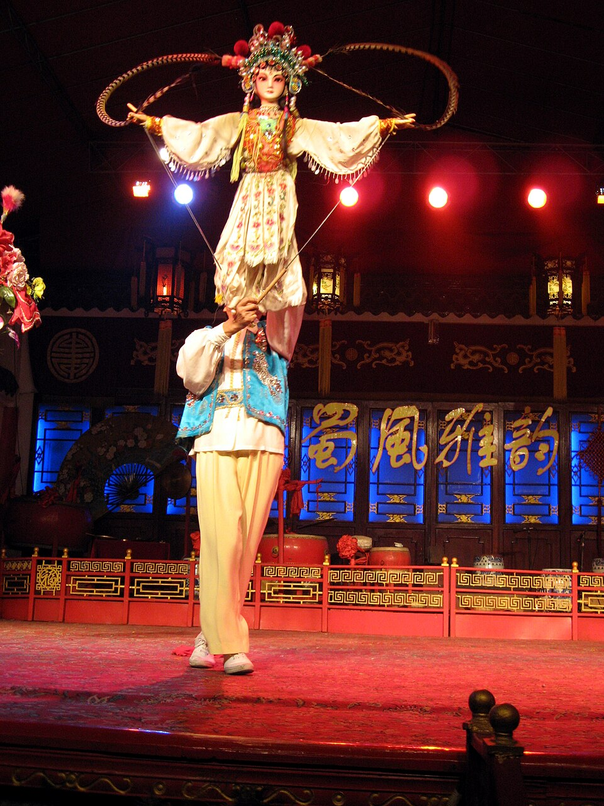

History feature
By 2026, stove-boiled tea on the Chinese internet is no longer just a winter check-in phrase. People keep mocking it as over-styled, overly photogenic, or more about roasting oranges than drinking tea, yet it never truly disappears. The reason is simple: it speaks to more than one passing trend. It touches a cluster of modern urban desires at once — to slow down, to gather around something warm, to sit with tea and conversation, and to briefly feel as if one has stepped out of an old painting or a late-imperial novella. What matters is not whether stove-boiled tea is still hot, but why it keeps returning, and which parts of its historical aura are real, which are selective memory, and which are contemporary reconstruction.
If stove-boiled tea is reduced to a photogenic winter package, it is underestimated. What gives it power is the way it stitches together several cultural strands that originally belonged to different layers of history: the close relationship between tea and fire in Tang boiling practices; the visual imagination of sitting together in Song-Yuan literary gatherings; the fireside ease of Ming-Qing winter life; and the slower, stay-and-talk social order preserved in modern teahouse culture. Contemporary businesses recombine charcoal braziers, clay kettles, persimmons, chestnuts, peanuts, rice cakes, bamboo trays, low tables, and rough textiles. The result is a scene that does not belong neatly to any one dynasty, but still feels uncannily historical.
That is also why stove-boiled tea is both compelling and often misunderstood. It is not a full reconstruction of one classical tea custom. It is better understood as a composite tradition assembled from historical fragments, object memory, platform aesthetics, and modern leisure desire. Precisely because it is not fully bound to historical precision, it travels well. But because it constantly borrows historical language, it deserves to be read carefully.

Chinese internet discussion around stove-boiled tea is revealing. It resurfaces almost rhythmically. Each autumn and winter, people post charcoal braziers, roasted citrus, clay kettles, and carefully staged tabletops. When the season turns, others begin asking whether the whole thing is really about tea or just about setting. It may look repetitive, but the repetition is not empty. What gets consumed again and again is not only the tea in the kettle, but a very specific modern wish: in a life defined by speed, standardized spaces, and constant screens, people still want a small offline interval shaped by firelight, circular gathering, and the suggestion of an older world.
This does not contradict the modern tea-drink stories we have already told in pieces on modern tea brands or the changing concept of tea way discourse. It complements them. Fresh tea chains solve for frequency, portability, and standardization. Stove-boiled tea offers the opposite: low efficiency, permission to linger, room for casual talk, visible objects, and shared attention. One is the cup you carry away through the city. The other is the hour you manage not to lose.
That is also why stove-boiled tea does not vanish simply because people claim to be tired of seeing it. As long as everyday life keeps accelerating, this slower, reverse-direction form of consumption — one with a faint hallucination of an older rhythm — will keep returning. Each revival looks like aesthetic recycling, but underneath it is a recurring emotional structure.
Many people encountering stove-boiled tea for the first time ask a simple question: did people in the past really do this? The clearest answer is that Chinese people certainly lived with hearths, fire, warm beverages, and shared sitting for a very long time. But the scene now marketed as stove-boiled tea is not a fully preserved format from one dynasty. It is a contemporary recombination of recognizably historical elements.
The “stove” part is not mysterious. Winter interior life in premodern China depended on braziers, stoves, and fire vessels. Scholars, households, inns, and shops all sat around warmth, heated wine or water, and passed time in conversation. The “boiled tea” part also has a long history. From Tang-era cake tea boiled in a pot, to regional continuities of simmered tea, to later everyday habits of warming kettles and lingering near heat, tea and fire were never fully separate. The issue is that the visual package now most familiar on social platforms — a small brazier, a narrow kettle, roasted fruit, nuts, sticky rice cakes, bamboo trays, rough wood, neutral fabrics — does not map neatly onto one historical scene. It is closer to a historically tinted collage adjusted by photography culture, boutique lodging, and retro commercial design.
But collage does not mean falsity. In fact, many living forms of cultural revival are not literal reproductions. They are translations of underlying historical structures into forms that remain emotionally legible and commercially workable today. Stove-boiled tea feels true not because it is an exact archival reconstruction, but because it really does seize several durable themes in Chinese tea history: fire control, shared sitting, slow talk, warm drinking, material presence, and the transformation of tea into a visible order of life.

Today many people assume that “drinking tea” naturally means steeping loose leaves. But if we return to the Tang period, the picture looks very different. In the tea world represented by Lu Yu’s Classic of Tea, one of the core experiences was boiled tea. Compressed tea cakes had to be roasted, ground, sifted, and then boiled. Fire control, water behavior, salt handling, and the development of froth were all part of the craft. In other words, at a major formative stage of Chinese tea culture, fire was not background scenery. It was one of the main actors.
This matters enormously for understanding stove-boiled tea today. Modern people experience the style as “ancient” not because they invented a false closeness between tea and flame, but because Chinese tea history genuinely includes a long era in which tea and fire worked together. Tang tea culture was not only about leaf quality. It was also about rhythm, visible preparation, vessel coordination, and the shared act of waiting around a live process.
Of course, contemporary stove-boiled tea is not a clean recovery of Tang boiling practice. Modern setups usually use loose tea, aged white tea, ripe pu’er, chenpi blends, or simply boiled water for later steeping. Tang boiled tea involved different materials and procedures. But the symbolic connection remains strong: both return the completion of tea to the visible presence of fire. For people accustomed to delivery cups and invisible electric heating, restoring flame, simmering, and waiting to the center of tea experience feels both newly tactile and historically charged.
Stove-boiled tea today is unusually easy to photograph as if it belonged in an old painting, and that is not accidental. Chinese visual traditions from the medieval to late-imperial eras accumulated countless images of people seated together in composed space — literary meetings, garden gatherings, elegant conversation, carefully arranged objects, interiors that invite pause rather than transit. These pictures continue to condition modern viewers. They imply that the meaningful moment is not while moving, but after one has sat down.
The Song is especially important here. Even though representative Song tea culture turned more toward whisked tea than Tang boiled tea, Song life aesthetics still strongly shape what contemporary stove-boiled tea looks like. What people desire is not only flame, but ordered leisure: a few people with good reason to remain seated, not in a hurry to leave, watching heat, drinking tea, talking slowly, surrounded by restrained but intentional objects. That may be one of the strongest surviving images in all modern fantasies of Chinese slow living.
So what stove-boiled tea borrows from the Song-Yuan world is not primarily one exact tea technique, but the social image of elegant gathering. It turns tea back into shared time and space. Most participants do not need to know Song tea manuals to feel the pull of that atmosphere. They only need to recognize, often intuitively, that such scenes promise order, emptiness, and duration — precisely what fragmented contemporary life tends to erase.
If stove-boiled tea is explained only through Tang and Song material, it becomes too elegant and too narrow. What really made “sitting by fire with hot tea” feel deeply familiar in China was the much longer and more ordinary social history from the Ming and Qing onward. Once loose-leaf infusion became dominant, boiling tea was no longer the sole mainstream technique. But braziers, warming kettles, heated interiors, and winter sitting around fire remained common in homes and shops. Especially in both northern and Jiangnan winter life, warming oneself by heat while talking and drinking was simply part of existence.
This line matters because what many modern participants experience as intimate is often not Tang procedure or Song literati distance, but something closer to household memory. Why do roasted oranges, sweet potatoes, peanuts, and chestnuts feel so naturally at home in stove-boiled tea setups? Because that combination continues a deeper seasonal domestic logic. Even when these foods are not strictly “tea history objects,” together they create a powerful folk familiarity: fire is not only there to be admired; it is there to warm the body, warm the hands, warm food, and warm conversation.
That is why stove-boiled tea can feel both culturally elevated and unexpectedly down-to-earth. It stands at the meeting point of two traditions: a higher aesthetic tradition continually beautified through paintings, tea books, and object discourse; and a low-threshold warming tradition preserved through family winters, roadside shops, local teahouses, and ordinary life. Only when those two lines overlap does the format become equally plausible in boutique hospitality spaces and in an ordinary weekend gathering.
When people discuss stove-boiled tea, they often focus on boiling and roasting while missing the deeper historical weight of gathering itself. In modern and late-modern Chinese teahouse culture, especially in places like Sichuan, Chongqing, and Chengdu, the core was not one fixed archaic tea method. It was a social order: sit first, then tea appears, then conversation takes its time. Tea is both medium and permission structure.
That is why even when stove-boiled tea does not literally happen in a traditional teahouse, it still evokes that world. What it inherits is not identical equipment, but the relationship of people sitting around a center. In older times that center might have been a brazier, kettle, or fire basin. In modern teahouses it might be a table, gaiwan, kettle, and bench. Today it may be a charcoal stove placed for both social warmth and photographic legibility. The center object changes; the shared slowing around it remains remarkably stable.
Seen from that angle, stove-boiled tea is not just a return of tea history. It is also a return of a social form. It answers a contemporary need for low-pressure sociability: less formal than a meal, less intense than a drinking session, less efficiency-coded than a café work meeting. Fire and hot tea together create permission to speak slowly — or not to speak much at all.

In cultural revival, the forms that spread most widely are rarely the most rigorous ones. They are usually the ones easiest to experience, easiest to copy, and easiest to circulate socially. Stove-boiled tea fits that pattern almost perfectly. It does not require participants to master tea knowledge, memorize dynastic sequences, or distinguish fine technical details at the outset. A live flame, a kettle, a few roastable foods, and a space suitable for sitting are enough to produce the feeling immediately.
More importantly, it turns tradition into a light ritual. A light ritual is not no ritual. It simply means the threshold stays low. One arranges things a little, waits a little, gathers a little, photographs a little, shares snacks, and pours tea slowly. The process is more deliberate than grabbing delivery tea, but much less demanding than attending a formal tea session. That in-between state — neither casual to the point of invisibility nor serious to the point of intimidation — makes it unusually suitable for contemporary weekend social life.
It offers another major advantage: even people who are not especially good at conversation do not feel stranded. Watching the flame, turning food, adding charcoal, refilling water, passing cups, smelling the steam — these actions naturally occupy silent space. Many popular offline activities today solve the same problem: how to let people be together without forcing constant verbal performance. Stove-boiled tea keeps returning partly because it enables exactly that kind of quiet coexistence with something to do.
The standard criticism of stove-boiled tea is that form outweighs substance: the tea may be ordinary, the snacks may be ordinary, but the photographs must look perfect. There is truth in that criticism. But to conclude from this that the whole phenomenon is empty would be too easy. Chinese tea culture has never been only about ingesting liquid. From Tang boiling to Song tea comparison to Ming-Qing tea settings and later object-conscious tea gatherings, tea has long involved display, comparison, narration, and arrangement.
What social-platform-era stove-boiled tea has done is intensify that visible dimension. Firelight, white steam, clay kettles, roasted fruit, and old wooden surfaces tell a story on camera far more readily than an ordinary hot cup does. So the form inevitably acquires performance. The real question is not whether there is performance, but whether performance has hollowed everything else out. Some venues really are little more than photo sets. Others, however, use tea menus, vessels, atmosphere, and pacing to convert the staged quality into a real opportunity to stay, talk, and absorb some sense of tea history and material culture.
From a cultural-historical perspective, entering through form and only later reaching for content is not a degraded path. Many people do not begin with Tang tea manuals and then seek stove-boiled tea. They begin with an image, then ask questions: did people in the past really drink tea this way? What did Lu Yu actually say? What is the difference between a teahouse and a tea setting? If a popular format can reintroduce those questions to the public sphere, it is already doing more than producing empty photographs.
At the deepest level, the value of stove-boiled tea is no longer hard to name. It is not only about tea. It is about reclaiming the right to gather around something in a world increasingly organized around solitary screens and accelerated completion. We have grown used to finishing meals, drinks, and conversations quickly and individually. Stove-boiled tea redirects attention toward a shared center — a flame, a kettle, a tabletop of things to be divided — and lets social relation be reorganized around a common present.
Fire matters here in a special way. It feels more elemental than electric light, more palpable than climate control, and more synchronizing than background music. Fire changes, weakens, asks to be tended. That means everyone around it is automatically placed in the same time. Modern people are moved by stove-boiled tea not only because it looks old, but because it temporarily restores a sense of togetherness that high-efficiency life keeps thinning out.
So even with all its commercialization, aesthetic templating, and platform repetition, stove-boiled tea remains worth understanding seriously. It shows that contemporary Chinese consumers have not abandoned tradition. They are simply more willing to accept traditions that have been translated into forms that are enterable, social, photographable, and briefly inhabitable. The format may not be perfectly faithful to any single past, but it is honest about what the present most wants to borrow from history: firelight, gathering, slowness, objects, and an afternoon one does not need to leave in a hurry.
If you want to keep following this line, continue with the place of matcha in Chinese tea history, tea whisks and the revival of Song whisked tea, and why the gaiwan became an everyday modern teaware form. Stove-boiled tea is not an isolated trend. It is one more contemporary translation of the long Chinese history through which tea has moved from boiling, whisking, and steeping into sitting, watching, talking, and gathering.